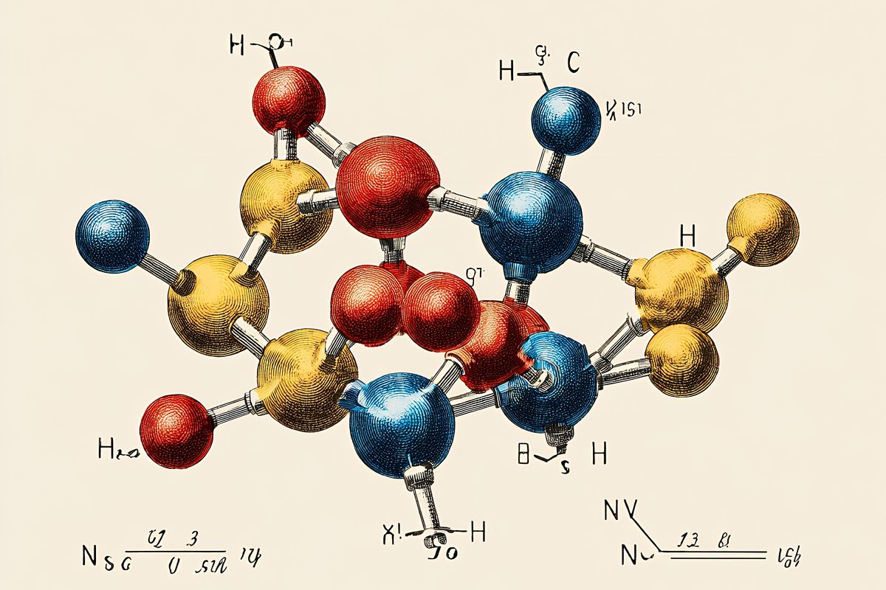

O ViniCastroLab estuda bactérias que causam doenças transmitidas por alimentos, como E. coli produtora de toxina Shiga e Salmonella, combinando sequenciamento genômico e microbiologia de laboratório. Agora também estamos abrindo uma frente em físico-química aplicada, com eletroquímica e bioinformática.
Linhas de pesquisa
Virulência e genômica de STEC
O que o genoma revela sobre STEC.

Controle de patógenos e resistência a sanitizantes
Sanitizantes, ácidos orgânicos, UV-C e calor.

Patógenos na cadeia de alimentos do Brasil
Ocorrência e resistência em Mato Grosso.

Físico-química aplicada, eletroquímica e bioinformática Nova
Sensores para detectar a deterioração.
The trade-off between sanitizer resistance and virulence genes: genomic insights into E. coli adaptation
Inconsistent PCR detection of Shiga toxin-producing Escherichia coli: insights from whole genome sequence analyses
Shiga-toxin producing Escherichia coli in Brazil: a systematic review
- Início como professor na UFMT e nova linha em físico-química aplicada, com sensores para detectar a deterioração de alimentos.
- Conclusão do pós-doutorado na University of Lethbridge (Canadá), com financiamento do BCRC.
- Artigo sobre resistência a sanitizantes e genes de virulência em E. coli publicado na Antibiotics.
- Genomas de Salmonella Cerro e Schwarzengrund do Brasil publicados na Genes.